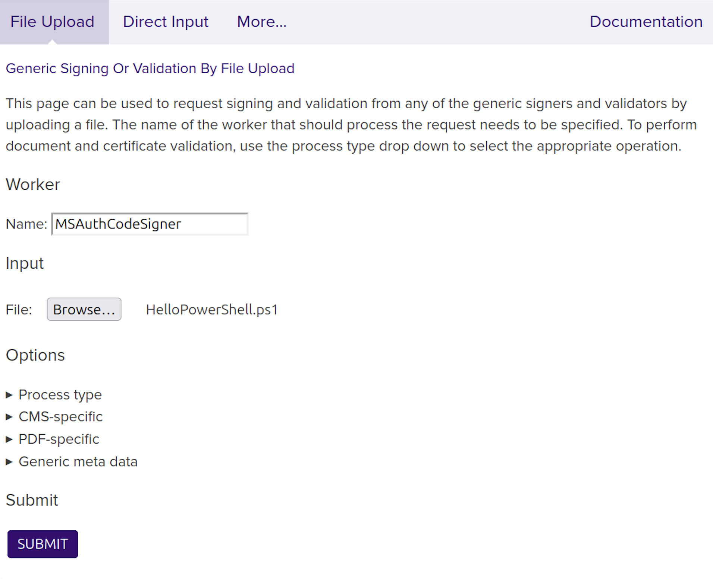
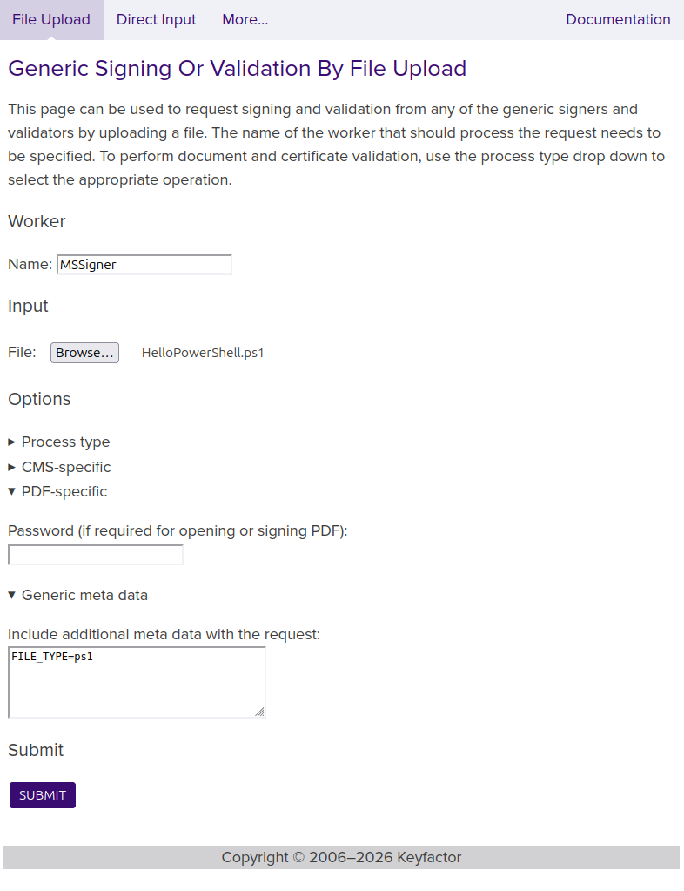

Sign with Authenticode Signatures
enterprise
Microsoft Authenticode is a digital signature format used to verify the origin and integrity of software binaries. The signature is embedded directly into the file and supports the following formats:
Portable Executable (PE) files such as
.exe,.dll,.sys, and.ocxWindows Installer packages (
.msi)Windows PowerShell scripts (
.ps1,.psm1,.psd1)Microsoft Catalog files (
.cat)Cabinet archives (
.cab)
For more information, refer to the Windows documentation on Windows Authenticode Portable Executable Signature Format.
SignServer provides two Authenticode-capable signers: MS Authenticode Signer and MS Signer. Both signers are configured like any other SignServer signer. The only unique requirement is a code signing certificate with the Extended Key Usage (EKU) extension for code signing (OID 1.3.6.1.5.5.7.3.3).
If your organization has a Certificate Authority, such as Keyfactor EJBCA, that is already trusted by your users, you can use that CA to issue the certificate. Otherwise, obtain a certificate from a CA that is trusted by default in Windows.
For testing, you can issue the certificate yourself. Ensure that the X.509 certificate has OID 1.3.6.1.5.5.7.3.3 and the CA certificate is installed in your test environment.
Authenticode Signer Configuration Properties
The following properties are most relevant when configuring the Authenticode Signer:
Property | Description |
|---|---|
| Algorithm for the digest of the binary. Example: |
| Optional program name to embed in the signature. Example: |
| Optional program URL to embed in the signature. Example: |
| The algorithm used to sign data. Example: |
| Worker ID or name of internal Authenticode timestamp signer within the same SignServer instance. |
| URL of external Authenticode TSA. |
For all available properties, refer to MS Authenticode Signer and MS Signer.
If using the MS Signer, the request metadata property FILE_TYPE is required for certain file types. See MS Signer#Request-Metadata-Properties.
Set up Authenticode Signer
The steps below use the ms_authcode_signer.properties template. If you are configuring the MS Signer instead, use ms_signer.properties and select MSSigner.
Step 1 - Add and Configure the Signer
Click Add, and select From Template.
Choose ms_authcode_signer.properties, and click Next.
Click Apply.
Select the Worker named MSAuthCodeSigner in the list.
Click the Configuration tab and update the following properties:
NAME: Set a descriptive name for the worker.
CRYPTOTOKEN: set this to match your Crypto Token.
Click the Status Summary tab, and click Renew Key.
Select a Key Algorithm (for example,
RSA) and Key Specification (for example,2048), and click Generate.
Step 2 - Generate a CSR and Install the Certificate
Choose a Signature Algorithm, for example,
SHA256withRSA, and enter a Subject DN for the certificate, for example,CN=MS Auth Code Signer Test,O=My Company,C=SE.Click Generate.
Click Download and save the CSR file.
Submit the CSR to your Certificate Authority. The CA returns the signed certificate and any CA certificates in the chain.
Before installing certificates in a production system, verify the Signer’s authorization settings. Once certificates are installed, the Signer is fully active and ready to accept signing requests.
Click Install certificates. Provide the Signer certificate first, then add the issuing CA certificates in order. Click Add for each certificate to append it to the chain.
When all certificates are in the correct order, click Install.
Confirm the worker status is Active. If not, check the Status Summary page page for errors.
Sign a File
You can submit files for signing using the Client Web, the SignClient, or HTTP clients like cURL.
Using Client Web
Go to the SignServer Client Web Generic page.
Scroll down to the Generic Signing Or Validation by File Upload section and specify your Worker name, for example
MSAuthCodeSigner, in the Worker Name field.Click Choose File, select the file to sign (for example,
MyApp1.exe), and click Submit.Click Submit.
Save the returned signed file (for example,
MyApp1-signed.exe).
The following examples display uploading a .ps1 file for the MS Authenticode Signer and MS Signer respectively:


Using SignClient
Send a signing request using the SignServer SignClient:
bin/signclient signdocument -workername MSAuthCodeSigner -infile MyApp1.exe -outfile MyApp1-signed.exeWhere workername is the name of the Worker, infile is the path to the file to sign, and outfile is where the signature will be written to.
Using cURL
Replace http://localhost:8080/ with the address of your server or appliance:
curl -F "workerName=MSAuthCodeSigner" -F "file=@MyApp1.exe" \ http://localhost:8080/signserver/process > MyApp1-signed.exeVerify the Signature
There are three ways to verify an Authenticode signature:
Option 1 - Inspect Digital Signature in File Properties
Right-click the file and select Properties.
Click the Digital Signatures tab.
Select the signature in the Signature list and click Details.

Option 2 - Verify with Microsoft SignTool
SignTool is a command-line tool included in the Windows SDK and requires the .NET Framework. For more information, see the Microsoft documentation on SignTool.exe.
After installing the Windows SDK, open a command prompt, navigate to the SDK Bin directory, and run:
cd C:\Program Files\Microsoft SDKs\Windows\v7.1\Binsigntool.exe verify /pa /v MyApp1-signed.exe Replace MyApp1-signed.exe with the filename of the signed file. /pa applies the Default Authentication Verification Policy. /v provides verbose output.
Option 3 - Run the Application to Check the Warning
When a signed executable is downloaded and run on Windows, the security warning dialog shows the publisher name, confirming the signature is valid. An unsigned file shows an unknown publisher warning.
The images below show the difference between an unsigned and a signed executable:


A correctly signed executable confirms all of the following:
The embedded signature is valid.
The code signing certificate was issued by a trusted CA.
The publisher name is displayed to the user.